Barneville-Carteret 2009

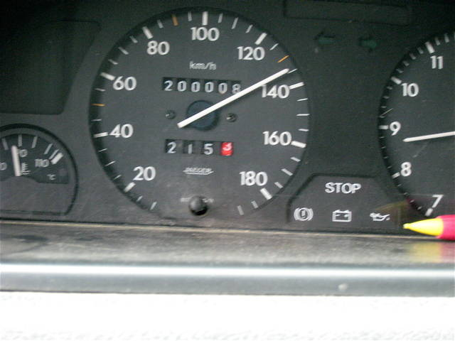
Barneville-Carteret, c'est au bout du Cotentin, près de Cherbourg, mais sur la façade Ouest de la presqu'île. En route, je passe les 200 000 km avec mon fidèle fourgon, acheté à 64 000 km et qui ne me sert que pour le cerf-volant...

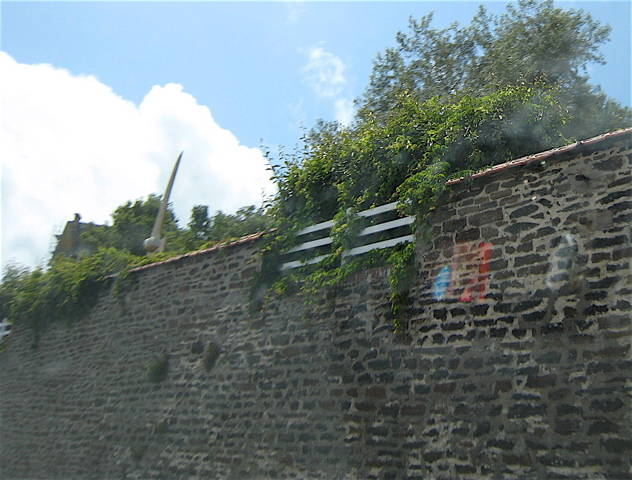
En arrivant, je fais par erreur un passage à Carteret, le grand Goéland de bois sculpté est toujours là-haut, dans ce jardin !

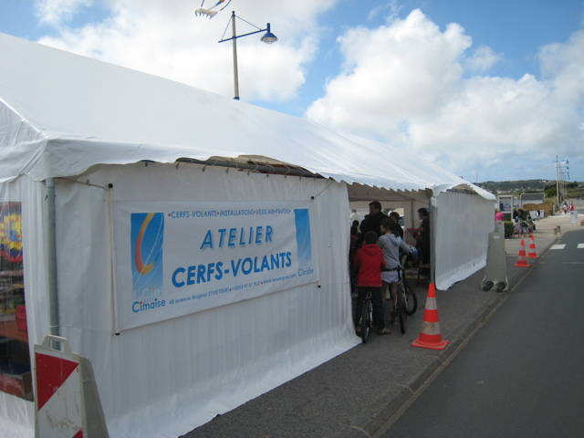
Retour à Barneville, de l'autre côté de la baie. Un barnum a pu être dressé sur le parking. Il abritera aux heures ouvrables les ateliers de cerf-volant pour enfants (tant qu'il restera des toiles et des baguettes...) et une petite boutique de Michel Gressier, et en heures creuses les diverses et somptueuses agapes prévues...

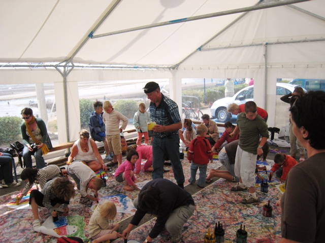
Les ateliers ont en fait commencé le jeudi. J'arrive vendredi après-midi, l'activité est encore furieuse, Michel n'arrête pas de re-remplir les pots de couleurs...

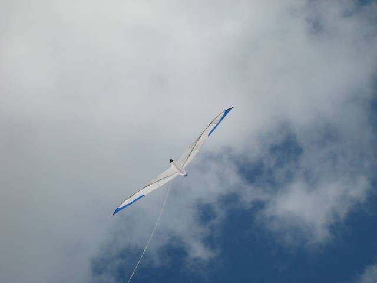
Il fait un bon Force 4, je sors l'Albatros 1, toujours stable et vaillant et il y a encore peu de cervolistes en l'air pour le descendre...

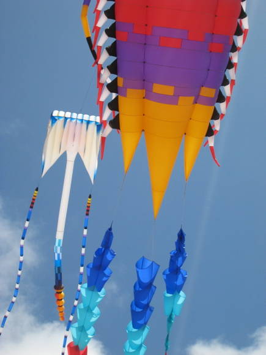
L'équipe a aussi monté un grand flow-form de Michel et le trilobite géant...

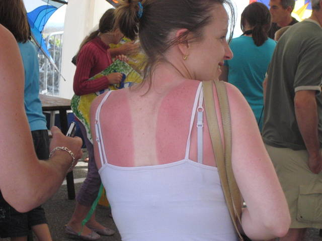
Le barnum voit aussi passer des spectateurs et des spectatrices qui sortent d'une petite bronzette sur la plage...

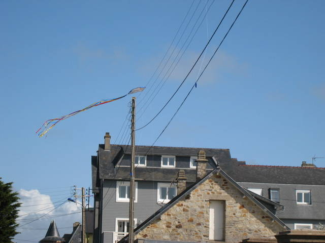
Avec Force 4 les Eddies volent quand même, mais bien des petites menottes vont s'ouvrir, pour pavoiser les lignes électriques avoisinantes !

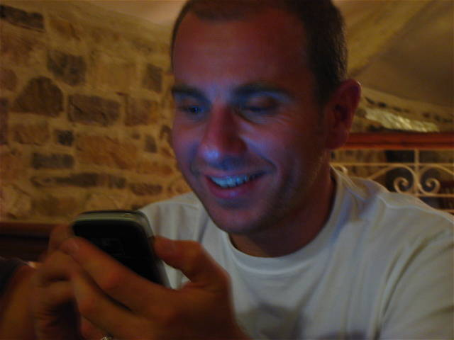
Au restaurant Le Gohan, le soir, Hugo affiche une intense jouissance devant son téléphone dernier cri ! Le menu est bon, les serveuses sont belles et sympathiques, mais la patronne rabat-joie trouve qu'on monte trop l'ambiance...

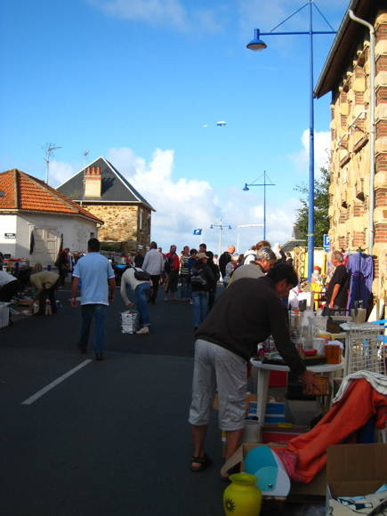
Samedi matin, marée haute, plus de plage, ça tombe bien, il y a une brocante dans la rue de la plage à Barneret...

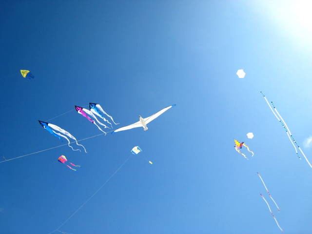
Le vent est toujours fort, je monte l'Albatros 2 au milieu des autres : à marée haute, avec le coeff de 104, la place disponible est quasi-nulle, et on s'entasse ! L'après-midi, cela va mieux !

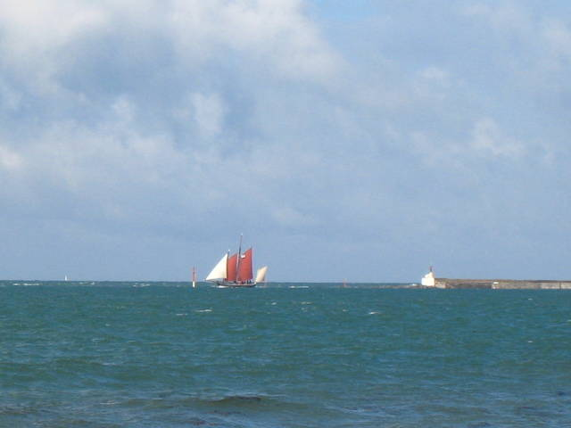
Le Neire Maove (la Mouette Noire en normand) sort du port de Carteret pour des ballades en mer, devant les Ecrehoux etc... C'est une Goélette du Cotentin, une reconstitution récente, 14 m de coque, 23 m hors-tout, 180 m2 de voilure, elle marche fort !

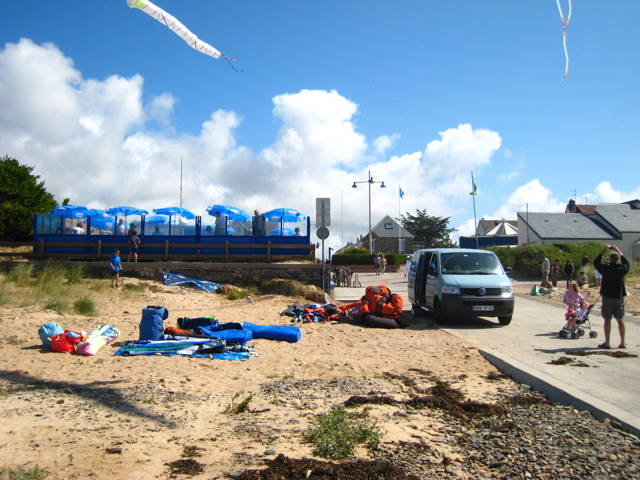
Michel arrive et vide sa camionnette sur la plage : impressionnant tas de cerfs-volants !

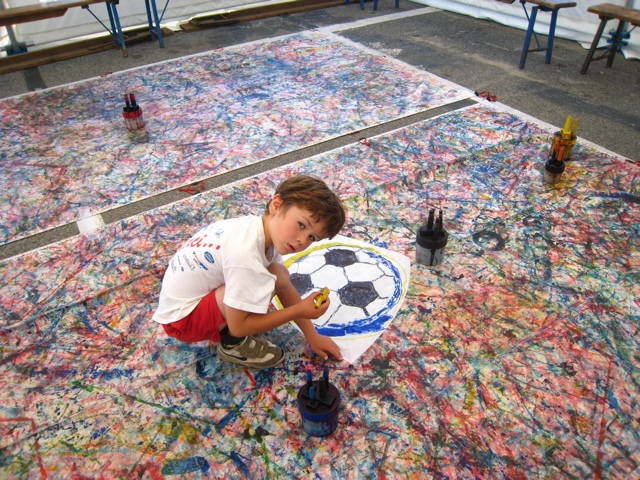
L'atelier est reparti aussi avec ce footballeur qui réalise un beau ballon ! Il va ensuite colorer les cases !

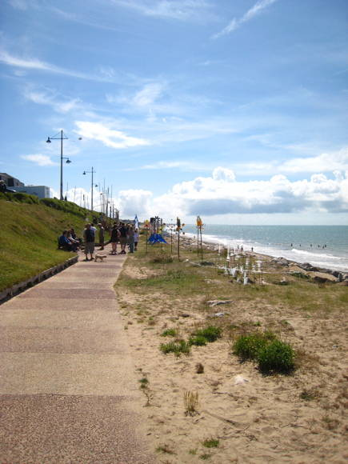
Les Jardins du V..t commencent à s'implanter sur le chemin à mi-hauteur de la promenade. Le sol est plutôt dur, et certains préfèreront planter dans le talus herbeux à gauche que dans le composite de cailloux à droite !

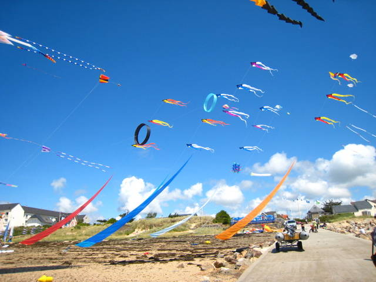
Michel, Jacques, Hugo, Greg et les autres ont fini de monter, outre les grosses structures, les trains de pyrodeltas et les grandes flammes qui meublent radicalement la plage...

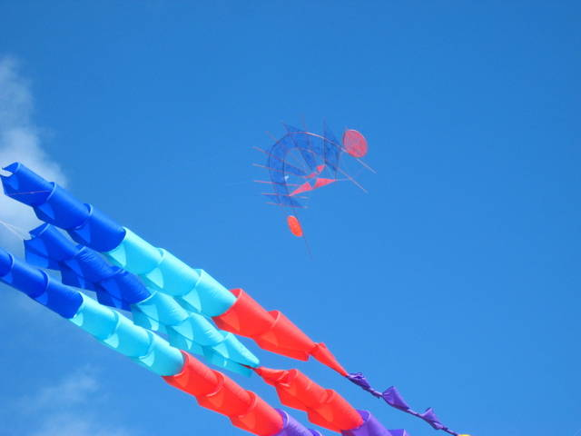
Pour contrebalancer les monstres impressionnants et démesurés et restituer au cerf-volant une dimension humaine, Thérèse monte à tour de rôle ses délicates créations, pas impressionnées par leurs voisins...

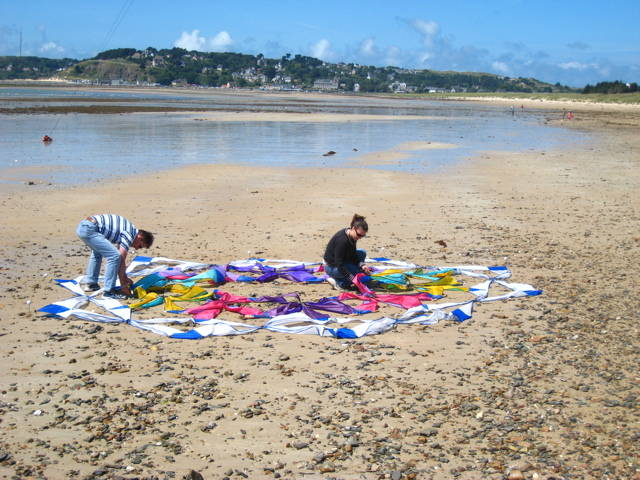
Après un démêlage complexe, Thierry et sa copine finissent d'étaler ce qui deviendra un splendide cerf-volant...

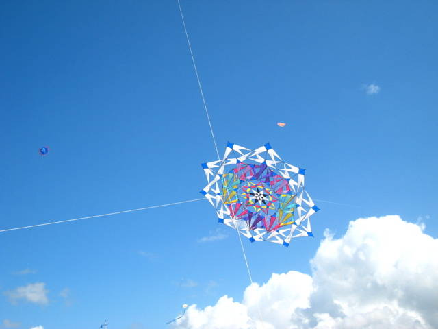
Et voilà, ça monte de manière très stable, bien qu'un peu dissymétrique, mais sans que cela menace le vol !

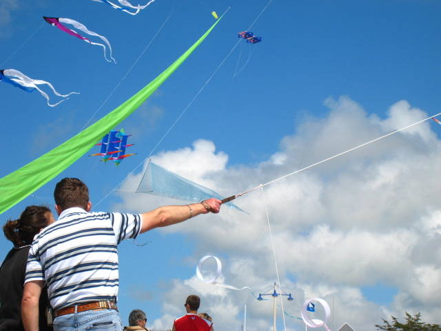
Le Diadème est un cerf-volant très aéré, et avec peu de surfaces directement perpendiculaires au vent. Mais ça tracte quand même d'enfer...

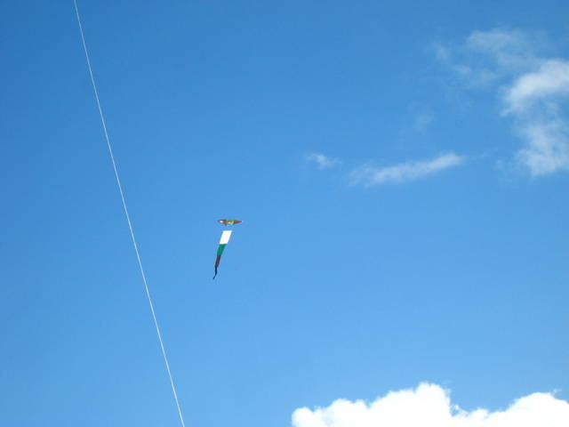
Tout là-haut, des amateurs d'altitude volent au-dessus de la mêlée, comme ce FAGA à large queue...

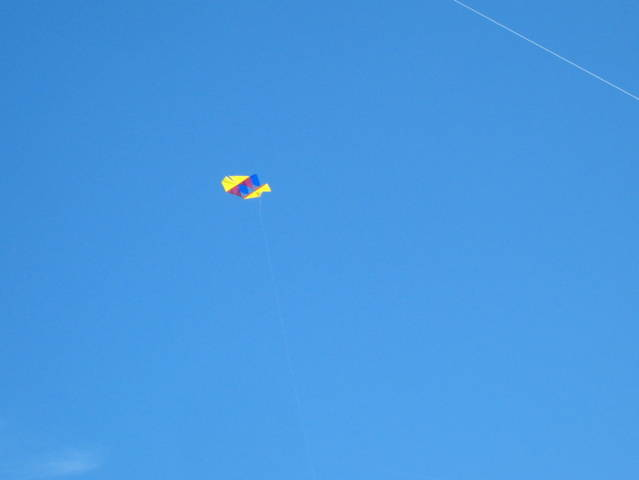
Christian Bécot aime aussi les altitudes élevées, nécessaires de toute façon pour la photo aérienne... Son Cricot est là-bas, indéracinable !

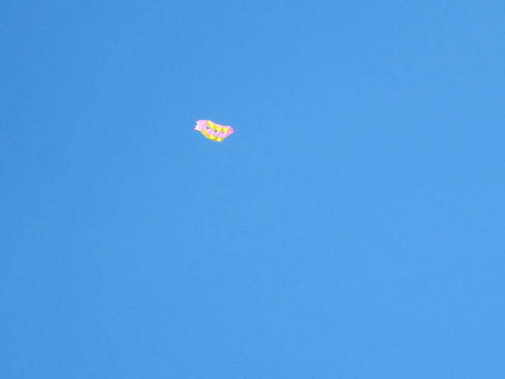
Il met aussi son Wacot, un Wasseges Bécotisé à sa sauce pour empêcher certaines excursions à plat dont le Wasseges est friand...

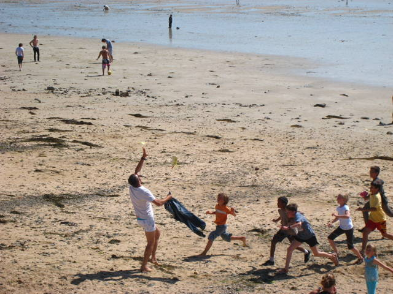
Bruno Tondellier organise bien sûr un lâcher de bonbon, sans beaucoup de pub, mais le téléphone-enfants marche vite !

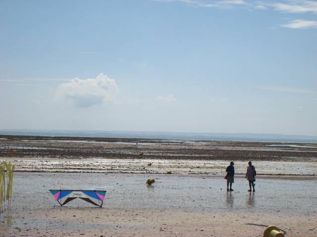
Avec le gros coeff, la plage devient très grande, même si on ne peut pas beaucoup l'utiliser... Tout au fond, c'est Jersey, et devant, les Ecrehoux...

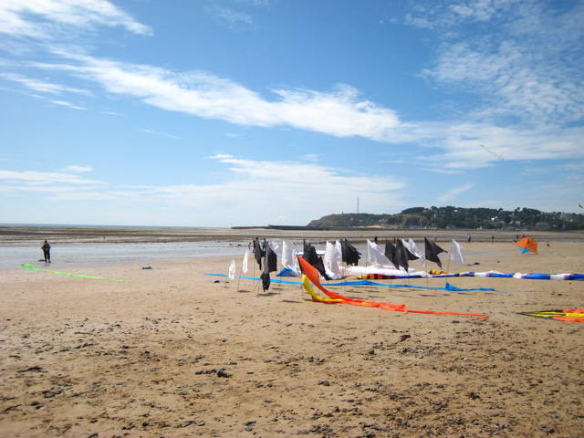
Un JdV temporaire noir et blanc sur l'estran, et au fond, le port de Carteret !

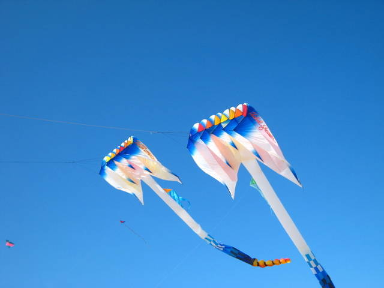
Le vent n'est pas trop fort, mais l'équipe de Michel arrive quand même à monter ses 2 flow-forms, identiquement décorés...

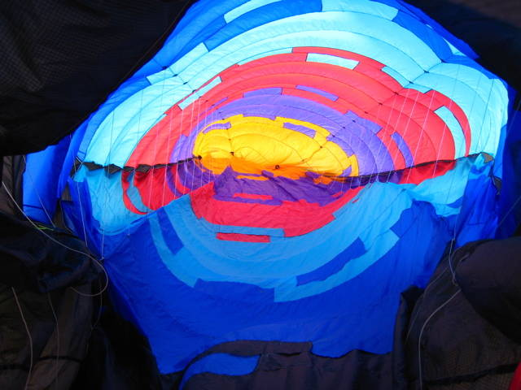
Le Trilobite a bien du mal à se gonfler, et de l'intérieur, on peut voir la progression...

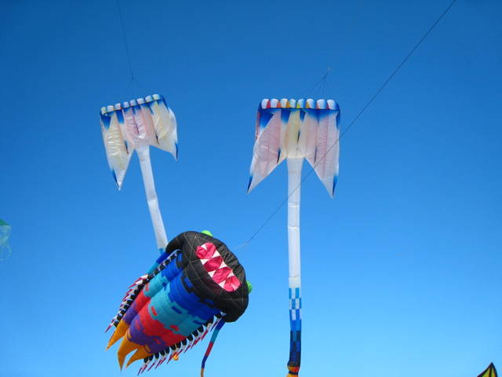
Mais quand il est gonflé, avec une queue unique, on peut, avec acharnement, le décoller, même s'il balaye un large secteur de droite à gauche... Sans queue du tout, il est trop instable...

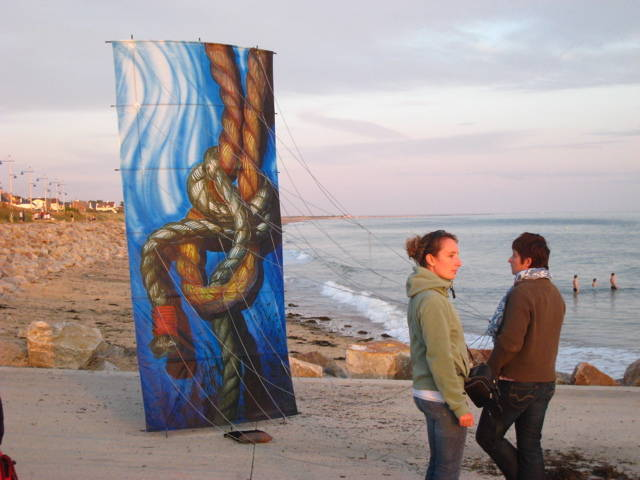
Mise en place pour le vol de nuit, Barbara et Anaelle lèvent un beau Edo de Michel, peint comme d'habitude... Mais le vent chute rapidement !

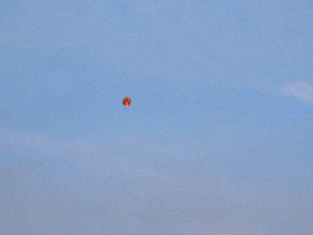
Alors quelqu'un (Joël, sans doute) commence à lâcher un ballon de papier - Montgolfière qui monte tout droit, Aïe......

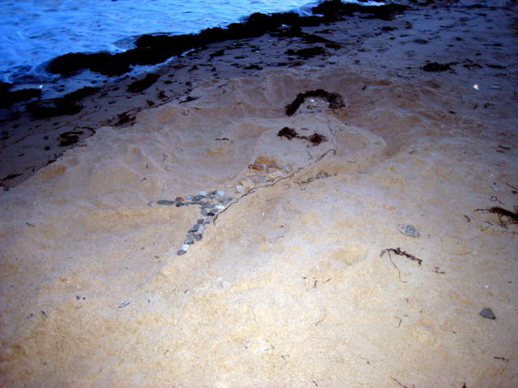
Je ferai un assez long vol par vent quasi-nul, avec mon Harfang, mais je devrai pour cela marcher sur la plage sans arrêter ! Très poétique, la marche seul sur la plage le soir, je rencontre même une sirène !

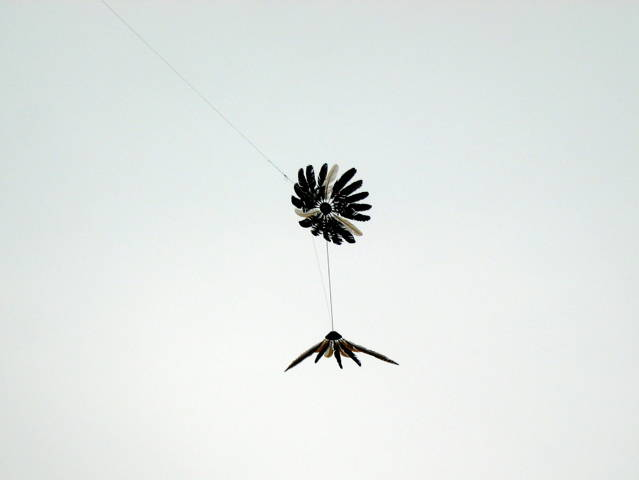
Dimanche matin, Joël monte son Truc en plume préparé pour le concours de Vercorin ! Il volera toute la journée...

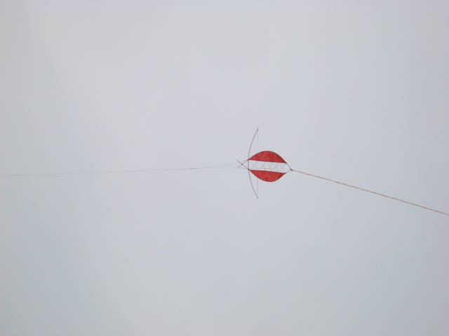
Thérèse fait voler ses réalisations artistiques, dont elle a une pleine valise ! Toutes sont belles, mais ont aussi un vol parfait...

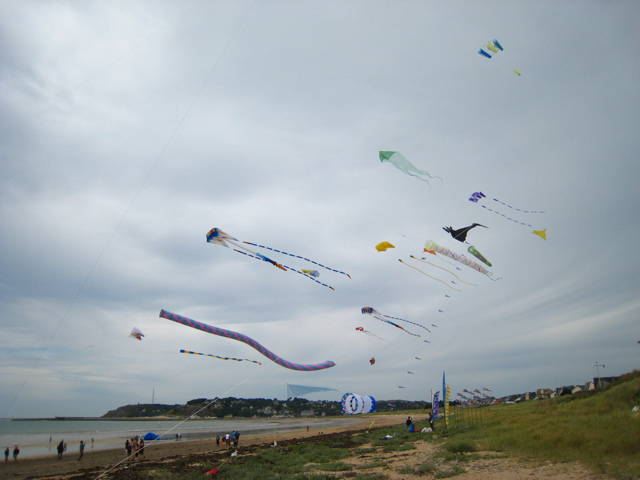
Finalement, le vent monte suffisamment pour que la journée de cerf-volant s'annonce bien !

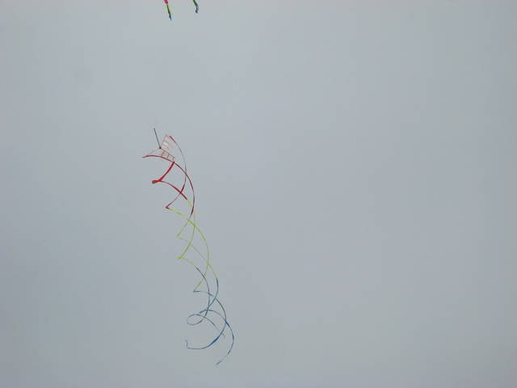
Une grande queue tournante, éloignée de la ligne par un bambou pour éviter les emmêlages !

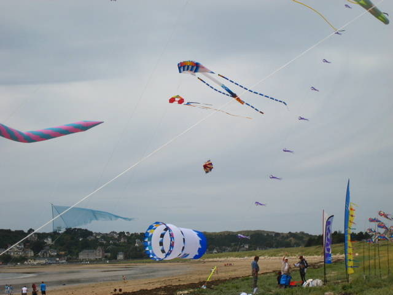
Et sur la plage, une énorme manche de Michel Gressier ! Oui, elle est bien là-bas, au-dessus du sable jaune !

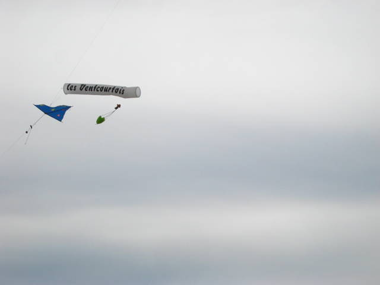
Bruno est passé au lâcher de nounours, sa navette est capable de tout...

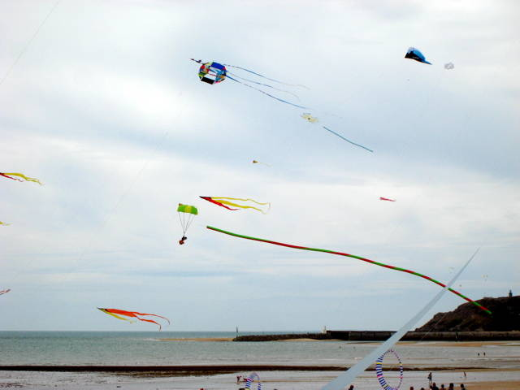
Plus qu'à courir pour suivre la trajectoire au travers des lignes nombreuses à cette heure...

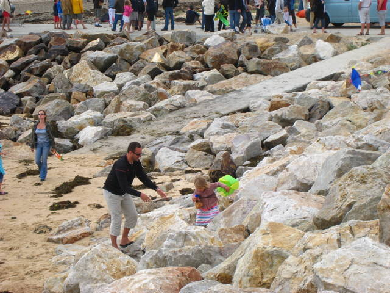
Atterrissage un peu rude dans les rochers, mais la propriétaire est heureuse, le doudou est sain et sauf...

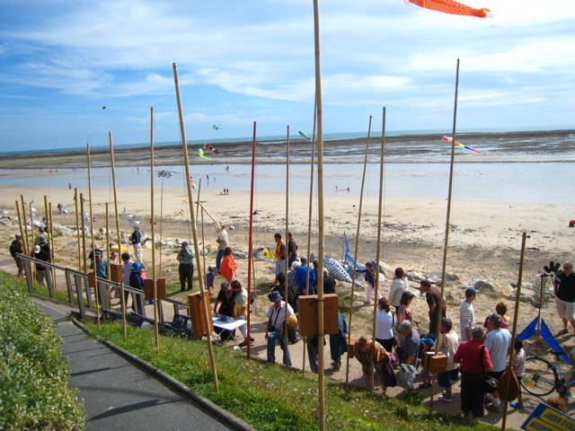
Bruno a aussi planté (dans l'herbe, c'est moins dur...) d'innombrables bambous à flûtes ou cordes vibrantes... Quel que soit le vent, on s'y promène dans une harmonie continue...

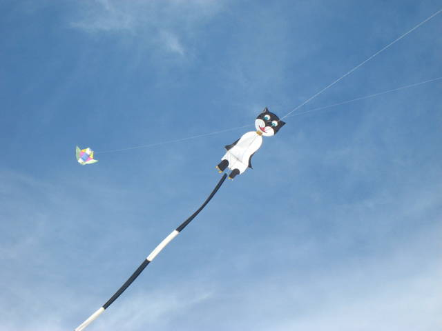
Sous le Météo bécotisé de Christian, Emmanuel fait voler, évidemment, un chat qui a l'air très gentil...

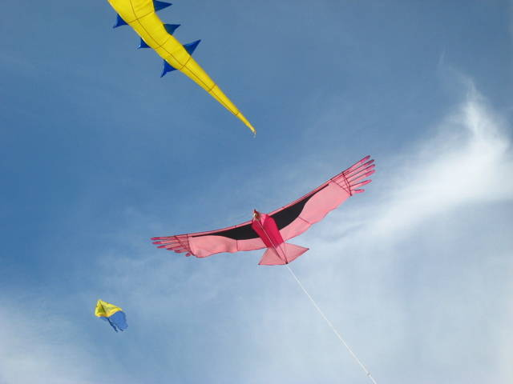
Le vent est bon, la mer est descendue et la plage offre plus d'espace, je peux enfin monter mon Condor qui s'est trop fait descendre ce matin...

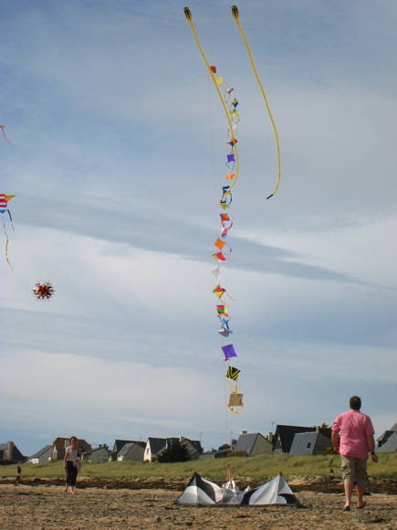
Après un essai apocalyptique de lancement ce matin au milieu des lignes serrées, Jésus peut aussi monter son train...

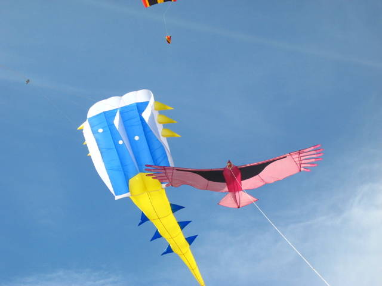
A cette altitude, mon Condor évolue de droite à gauche et passe au-dessous du flow-form, mais pas de beaucoup... Finalement, pour éviter le stress, je vais me le monter à 200 m !

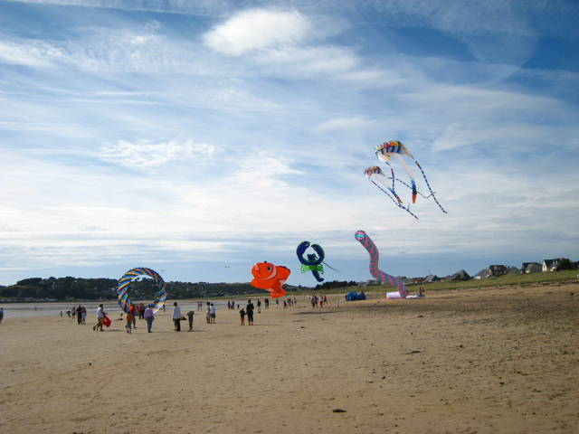
Sur la plage, la panoplie s'enrichit et sous les flow-forms, on voit apparaître un gros Nemo, un homard et une longue manche rotative !

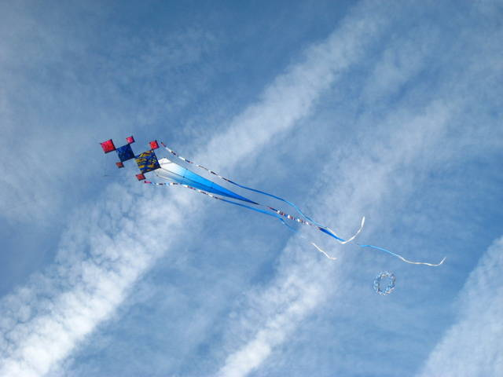
Michel montera aussi une de ses oeuvres fétiches, une Dague immense et très stable !

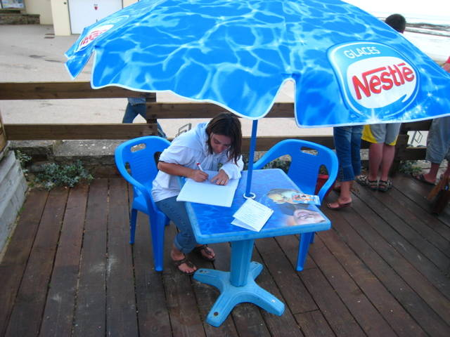
En fin d'après-midi, pot général à la terrasse qui domine la plage. Un petit mot pour la patronne qui a été sympathique et efficace tout au long des 2 jours...

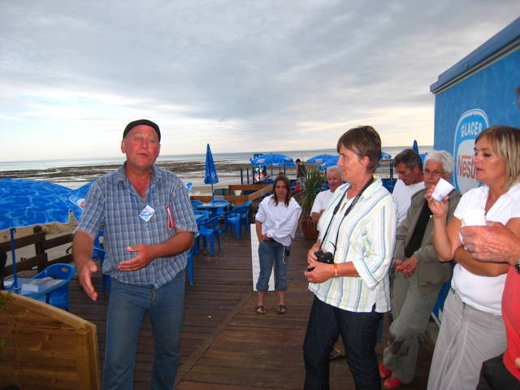
Michel fait un petit speech de fin, déplorant que la municipalité ne soit pas représentée... Mais finalement, il y a une conseillère qui se dénonce, ouf, Michel se rattrape de justesse !

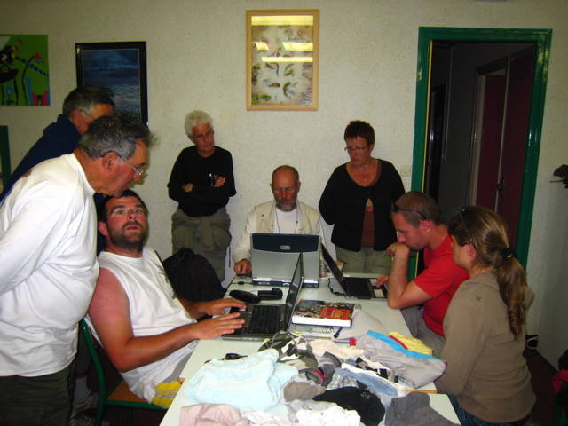
Le soir, dîner au Centre, à Barneret... Après le dessert, un pool d'ordinateur se forme... Hugo présente même des photos de son mariage avec Audrey !

Lundi matin, on commence la journée en convoi, avec arrêt à la Maison du Biscuit... Je croyais qu'on verrait la fabrication, mais les ateliers sont inaccessibles "pour des raisons d'hygiène et de sécurité" et on ne voit que le magasin, dommage !

Et on se retrouve devant le hangar à dirigeables d'Ecausseville, 150 m de long, 30 m de haut, tout en béton... Une association (voir http://www.aerobase.fr ) tente de le faire revivre, même s'il faudra rénover l'architecture ce qui aura un coût gigantesque...

Philippe BELIN, Président de l'association, nous fait un petit speech de présentation avant la visite...

Et Patrick Mouchague, qui s'est, avec Patricia, beaucoup impliqué dans l'affaire, nous commente l'ensemble sur une maquette à l'échelle !

Le hangar est couvert de ces énormes et pesantes tuiles de béton dont bon nombre sont plutôt décrépites et dont la restauration est problématique ! Pour l'heure, une partie du hangar est protégée des chutes de gravats par un filet...

Mais l'ensemble a encore fière allure, et une présence impressionnante par son volume... Il abrite pour l'heure seulement de petits dirigeables, la porte dégageant toute la hauteur ayant été détruite par accident, et en partie murée !

Un petit dirigeable avait été construit pour effectuer une traversée de la Manche par pédalage humain entraînant 2 hélices orientables ! Les vents contraires ont fait échouer par deux fois la tentative...

Un des membres présente son "drône", qu'il peut ici expérimenter tranquillement. Il est équipé de 4 rotors puissants (0 à 120 m en 4 secondes !) d'une stabilisation totale, d'un GPS amélioré, d'un retour video avec lunettes d'environnement virtuel, etc...

On peut aussi essayer l'AéroPlume, que vous avez dû voir dans des émissions de Nicolas Hulot !

Le spécialiste se déplace avec une extrème précision, allant jusqu'à se poser sur le fil avec les petits drapeaux ! Evidemment, l'engin n'est pas utilisable en extérieur, la force motrice étant très faible.

Il se déplace avec majesté, c'est très beau à voir !

Des animations sont aussi offertes aux enfants comme le découpage d'avions en Depron, ce plastique mousseux et très léger en feuilles. On peut monter ces planeurs avec un ballon à 30 m et les lâcher pour un planer harmonieux...

On nous présente aussi du vol permanent, avec un de ces planeurs qui surfe sur l'onde créée par la plaque oblique qu'un coureur maintient dessous ! J'ai essayé, comme d'autres, il faut un peu d'entraînement !

Déjeuner ensuite dans le Dortoir des Marins (voir plus bas) avec les restes du repas d'hier, et il en restera encore... à manger et à boire ! En combinaison rouge, le barbu est Christophe, qui officie là pour le moment, vous savez, de Christophe et Nina...

Dortoir des Marins, car c'étaient des marins qui servaient dans les unités de dirigeables, utilisés pour détecter les sous-marins qui voulaient attaquer les convois ! Ils dormaient ici, dans des hamacs accrochés à ces barres...

Au retour, j'ai un rendez-vous au Havre, je repasserai le Pont de Normandie à l'architecture grandiose et impressionnante !
Barneville-Carteret 2009 : Un très beau week-end, épargné par la météo, sauf le vol de nuit sans vent. Une belle organisation, et généreuse, des cerfs-volants pleins les yeux et la tête, un festival de gens qui se connaissent et s'entraident dans un bon climat, merci à L'Agence du Vent !